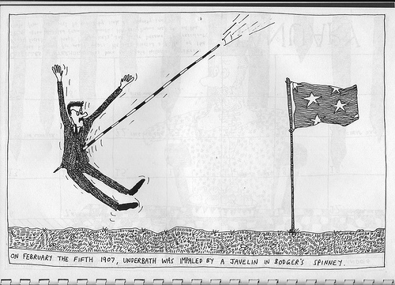

Thursday, September the 7th, 2017
back to: title, date or indexes
Can it be that a quarter of a century has passed since the publication of the Hooting Yard Calendar 1992? Tempus bloody well fugit, and no mistake. The calendar that year was entitled “Accidental Deaths Of Twelve Cartographers”, and here is one such accidental death, that of Underbath, who, we are told, was impaled by a javelin in Bodger's Spinney on February the fifth 1907.
